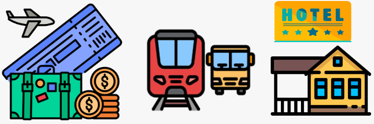

Costos
Traslados

Los costos de los traslados pueden variar dependiendo de cómo decidas moverte durante tu estancia
en Reikiavik. Algunas opciones comunes incluyen:Traslado desde/hacia el aeropuerto en el cual se puede optar por
tomar un taxi, utilizar servicios de traslado compartido o utilizar el transporte público.
El costo puede variar dependiendo de la distancia y el método elegido.
Algunas de las opciones disponibles son:
Desde/hacia el areopuerto
- Autobús: El Flybus es el autobús más popular que opera entre el aeropuerto de Keflavík y Reikiavik. El billete de ida cuesta 29 € y el de ida y vuelta 55 €. El trayecto dura unos 45 minutos.
- Taxi: Los taxis son una opción más cara, pero también más cómoda. El trayecto del aeropuerto de Keflavík a Reikiavik en taxi cuesta unos 150 €.
- Traslado privado: Los traslados privados son la opción más cara, pero también la más cómoda y flexible. El precio de un traslado privado del aeropuerto de Keflavík a Reikiavik oscila entre 180 € y 250 €.
Traslados entre lugares
- Coche de alquiler: Alquilar un coche es una buena opción si quieres explorar Islandia a tu propio ritmo. Los precios de alquiler de coches varían según la temporada y el tipo de coche, pero puedes esperar pagar unos 50 € al día por un coche pequeño.
- Autobús: Los autobuses son la forma más económica de viajar entre ciudades y pueblos de Islandia. La empresa de autobuses más popular es Straeto. Un billete de autobús de Reikiavik a Akureyri cuesta unos 50 €.
- Tour privado: Los tours privados son una buena opción si quieres explorar Islandia con un guía experto. Los precios de los tours privados varían según la duración del tour y el número de personas, pero puedes esperar pagar unos 100 € por persona por un tour de un día.
Hospedaje

Los precios de los hospedajes en Reikiavik pueden variar dependiendo de la época del año, la ubicación
y el tipo de alojamiento. Algunas opciones comunes incluyen, hoteles en estos lo precios pueden variar
desde opciones más económicas como albergues hasta hoteles de lujo.Puedes encontrar apartamentos y casas
para alquilar a precios variables dependiendo del tamaño, ubicación y comodidades ofrecidas.
Algunas de las opciones disponibles son:
Hoteles, albergues y Airbnb
- Hoteles económicos en los cuales el precio de la noche oscila entre50€ - 100€, hoteles rango medio 100€ - 200€ por noche y hoteles de lujo 200€+ por noche.
- Albergues que ofrecen habitaciones compartidas y privadas en las cuales el precio por una habitacion compartida oscila entre 20€ - 30€ por noche y habitaciones privadas de 40€ - 60€ por noche.
- Airbnb es una buena opción para encontrar apartamentos, casas y habitaciones en alquiler en Islandia. Los precios varían según la ubicación, el tamaño y las comodidades del alojamiento. Los precios por habitaciones privadas estan entre 50€ - 100€ por noche y por apartamentos enteros entre 100€ - 200€ por noche.
- Camping:Islandia es un país ideal para acampar. Hay campamentos en todo el país, con precios que oscilan entre 10 € y 20 € por noche.
Entradas a sitios turisticos

Muchos de los sitios turísticos en Reikiavik y sus alrededores tienen tarifas de entrada.
Algunos ejemplos: Los precios en laguna azul pueden rondar los 50-100 euros por persona, la entrada al parque nacional
es gratuita, pero puede haber costos adicionales si decides participar en tours guiados o actividades dentro del parque.
Otros sitios turísticos como museos, cascadas, y áreas protegidas pueden tener tarifas de entrada adicionales que van
desde unos pocos euros hasta más de 20 euros por persona.
Algunas de las opciones disponibles son:
- Laguna Azul: La Laguna Azul es una de las atracciones turísticas más populares de Islandia. Es una laguna geotérmica con aguas de color azul lechoso que se dice que tienen propiedades curativas. La entrada a la Laguna Azul comienza en 55 €.
- Cueva de Hielo: La Cueva de Hielo es una cueva natural de hielo glaciar situada en el Parque Nacional Vatnajökull. Se puede acceder a ella en una visita guiada. El precio de la entrada a la Cueva de Hielo comienza en 110 €.
- Ballenas: Islandia es un lugar fantástico para observar ballenas. Hay varios operadores turísticos que ofrecen excursiones de avistamiento de ballenas. El precio de la entrada a una excursión de avistamiento de ballenas comienza en 80 €.
- Inside the Volcano: es una visita guiada al interior de un volcán inactivo. El precio de la entrada a Inside the Volcano comienza en 80 €.
- Museo Nacional de Islandia: Adultos: 13,55€. Estudiantes y personas mayores: 6,78€. Menores de 18 años: Gratis.
- Parque Nacional de Thingvellir, Gullfoss, Geysir la entrada es gratuita.